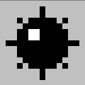

Minesweeper Documentation
Welcome to The Minesweeper Documentation! Whether you're a beginner or an experienced player, this guide will help you master the art of Minesweeper. Learn the rules, strategies, and even speed running techniques to become a Minesweeper pro.
Introduction
The Minesweeper board consists of various characters representing different elements. Understanding these characters is crucial for playing the game:
 : Represents a covered square that may or may not contain a mine.
: Represents a covered square that may or may not contain a mine. : Indicates an uncovered square with no mines around it.
: Indicates an uncovered square with no mines around it.-


 : Indicates the number of mines in adjacent squares when revealed.
: Indicates the number of mines in adjacent squares when revealed. - : A flagged square, marked by the player as a potential mine.
-  : A revealed mine and a revealed mine that has been clicked respectfully. Both indicate a game that has ended.
Website InterFace
This Outlines the Different Aspects of the website
- Flagging: Located at the top left corner of the Minesweeper game board, you'll find the "Flag Counter." This counter displays the total number of mines present in the current puzzle. As players flag tiles, the counter decreases, providing a real-time count of the remaining mines. .
- Timer:The timer in Minesweeper serves as a crucial component of the gameplay experience, offering players a precise measure of the time they spend navigating the minefield. Positioned near the top-right corner of the game board, the timer activates as soon as players embark on a new game by clicking on their first tile. From that moment, it diligently records the elapsed time in seconds up to 999, providing players with real-time feedback on their progress. Overall, the timer is an invaluable tool, enabling players to challenge themselves, compete for faster solving times, and enhance their Minesweeper skills.
- The Game Tab:Located above the top left corner of the game board the game tab allows players to select the difficulty they wish to play. These difficulties change the width of the board which increases the amount of mines on the board. You select each difficulty by clicking the empty circles. Easy: Grid Size: In Easy mode, the game grid is the smallest compared to the rest of the difficulties. This grid has 9 x 9 tiles. This means there are fewer tiles to uncover. Mines: The number of mines hidden within the grid is significantly lower, only having 10 mines, making it easier for players to navigate without accidentally uncovering mines. Intermediate (Medium): Grid Size: In Intermediate mode, the grid size increases, the grid size is now 16 x 16. This offers a moderate challenge with a larger play area. Mines: The number of mines hidden within the grid is moderately increased, now having 40 mines compared to Easy modes 10, adding complexity without overwhelming players. Hard: Grid Size: Hard mode features the largest grid, now being 16 x 30 tiles, providing a considerable challenge with a vast playing area. Mines: Hard mode contains 99 mines, making it far more challenging to navigate the grid without uncovering mines accidentally. Custom: Grid Size: Custom mode allows users to input the height (how tall the board is) and width (how wide the board is) they wish. They input these in the boxes next to “Custom” This allows complete freedom for the board the player wants to use. The maximum size of a game is 99 x 99. Mines: Custom allows users to input the amount of mines they want to attempt to uncover by entering numbers in the boxes next to “Custom”. You cannot enter more mines than there are tiles on the board, the max you can enter is one less than the amount of tiles. These difficulty levels allow players to choose their preferred level of challenge, with Easy serving as a beginner-friendly introduction to the game and Hard offering a formidable test of Minesweeper skills as well as custom allowing freedom to the game the user wishes to play. Players can choose the difficulty level that best suits their skill level and desire for a Minesweeper gaming experience.
- Display: The "Display Menu," located beside the game menu, allows users to tailor the website's visual and physical aspects, offering customization options for improving their Minesweeper gaming experience. These options encompass adjustments like board size, positioning, and the activation of a "Night mode" with a dark background. Zoom In the Minesweeper game, the "Zoom" feature empowers users to adjust the size of the game board without altering the number of tiles on the grid. There are three available size options: 100%, 150%, and 200%. 100%: Choosing the 100% option sets the board to its original size, maintaining the standard tile dimensions. 150%: Opting for 150% makes the board slightly larger than the original size, providing a more detailed view of the game grid without changing the tile count. 200%: The 200% selection maximizes the board size, making it the largest among the available choices. This larger display makes it easier to see and interact with the individual tiles. To resize the board, users can easily make their selection by clicking on the empty circles corresponding to the desired zoom level. This feature offers players flexibility in customizing their Minesweeper experience to suit their visual preferences and gameplay comfort. . .
- Position: The "Position" feature provides users with the ability to customize the location of the game board on their screen. This feature offers two distinct options: "Left" and "Center." Opting for "Left" reorients the game board to the left side of the screen, aligning the grid with the screen's left edge. Conversely, selecting "Center" shifts the board to the middle of the screen, ensuring that the game grid is centered within the screen's available space. To make this adjustment, users can simply click on the empty circle next to their preferred choice. Another useful customization feature is "Night mode," which transforms the game's background to black, creating a visually distinct gaming experience. To activate "Night mode," users only need to click on the empty square, altering the game's aesthetic to a darker and more visually immersive setting. .
- Controls:Next to the Display tab the controls menu displays all of the controls for the game .
- Import and Export: The "Import" and "Export" tabs are closely linked features that facilitate the sharing of game setups among users. When you want to import a game setup created by another user, you need to obtain a unique identification code for that specific game, which is generated in the "Export" tab. To share a game setup, the user goes to the "Export" tab and copies the game's unique ID. This ID is like a digital signature for that particular game configuration. Once you have this ID, you can head to the "Import" tab. In the "Import" tab, there is an input field where you paste the game ID you obtained from the other user. After pasting the ID, you can click the "Load Game" button. This action tells the game to load the specific game setup associated with that unique ID. .
- Smiley:The face at the top of the board in Minesweeper not only serves as a visual element but also has a functional role in the game. Its expressions are linked to your progress and actions during the game. When you click on the face, it resets the current game, giving you a fresh start. If you accidentally reveal a mine, the face will turn into a sad expression to indicate that you've lost, and the game will be over. However, when you successfully clear the minefield by flagging all the mines and revealing all safe cells, the face will sport a joyful, victorious expression, signaling your success. This dual function of the face in Minesweeper, both as an emotional indicator and a game-reset button, adds a delightful and user-friendly dimension to the game's interface, making it a beloved and enduring feature of this classic puzzle game. .
- LeaderBoard:The Minesweeper leaderboard located under the board, is a feature that showcases the top global scores achieved by users who have successfully cleared the minefield in the shortest amount of time. It not only ranks players based on their overall performance but also categorizes them into different skill levels, such as beginner, intermediate, and expert, allowing for fair competition among players of varying skill levels. Moreover, the leaderboard provides users with insights into the fastest times achieved in different time frames, including today, this week, this month, and all-time, offering a comprehensive overview of players' performance trends and achievements over different periods. .
Materials
- Laptop or Desktop Computer
- Access to Internet
- Browser that can run the website (Google Chrome, Firefox, Microsoft Edge, etc)
- Working mouse or touchpad
Controls
- Left Click: Reveal a square
- Right Click: Mark a square with a flag
Step 1: Click to Reveal
Start by left-clicking on a covered square to reveal its content. The grid is initially filled with covered squares, and your goal is to uncover all non-mine squares.
Step 2: Use Numbers
Numbers on revealed squares indicate the count of mines in adjacent squares. Leverage this information to deduce mine locations. If a square has the number "2," two mines are present in the surrounding eight squares.

Step 3: Avoid Mines
Caution is crucial. If you accidentally reveal a mine, the game ends. Mines are randomly scattered, making each move a calculated risk. Be strategic and observe the numbers to identify potential mine locations.

Step 4: Mark with Flags
Right-click on a square to mark it with a flag if you suspect it contains a mine. Flagging helps keep track of potential mines and avoids accidental clicks.

Step 5: Win the Game
Continue revealing and flagging until all non-mine squares are uncovered. A successful completion reveals a safe configuration.

Speed Running Techniques
If you're aiming for speed, consider the following techniques:
- Pattern Recognition: Learn common mine patterns to quickly identify safe moves.
- Flagging Strategies: Develop efficient flagging strategies to mark potential mine locations.
- Memory Skills: Improve memory to recall the board's status and avoid revisiting known safe areas.
- Optimized Clicking: Practice precise clicking to minimize errors and speed up gameplay.
FAQ
Here are some frequently asked questions about Minesweeper:
- Q: Can I play Minesweeper on mobile?
A: There are mobile versions and apps available for Minesweeper on various platforms. - Q: How does scoring work in Minesweeper?
A: Scoring is typically based on the time taken to complete a game. Faster times result in higher scores. - Q: Are there different difficulty levels?
A: Yes, Minesweeper often comes with different difficulty levels, adjusting the size of the grid and the number of mines.
Troubleshooting
If you encounter issues while playing Minesweeper, consider the following troubleshooting tips:
- Ensure Software Updates: Make sure your Minesweeper application is up-to-date with the latest software version.
- Check System Requirements: Verify that your system meets the minimum requirements for running Minesweeper.
- Graphics Driver Update: Update your graphics drivers to prevent performance or display issues.
- Reinstall Minesweeper: If problems persist, try reinstalling Minesweeper to resolve potential software corruption or restart the game.
- If problems persist: contact emmettnicholas@gmail.com.
Licensing
The owner of the website used is EMMETT NICHOLAS. The license for Minesweeper may vary depending on the version and distributor, so it's crucial to review the specific license agreement provided with the software to understand its terms. Adhering to these terms ensures compliance and proper use of Minesweeper.